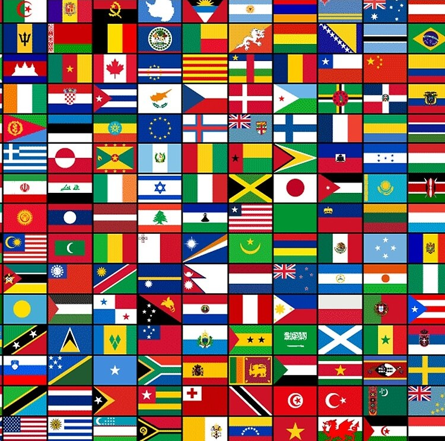

These are my works
My first work is related to a CSS based exercise. The Objective is to follow a couple of guidelines and to acheive the desired look.
👈 Follow this link to see it.
 This next project is about CSS again, but this time
we will be turning to the famous Tic Tac Toe
board. The idea was to replicate this iconic board
using none other than HTML and CSS.
This next project is about CSS again, but this time
we will be turning to the famous Tic Tac Toe
board. The idea was to replicate this iconic board
using none other than HTML and CSS.
👈 I think you're getting the hang of it.
If you somehow don't know anything about Tic Tac Toe
click here
